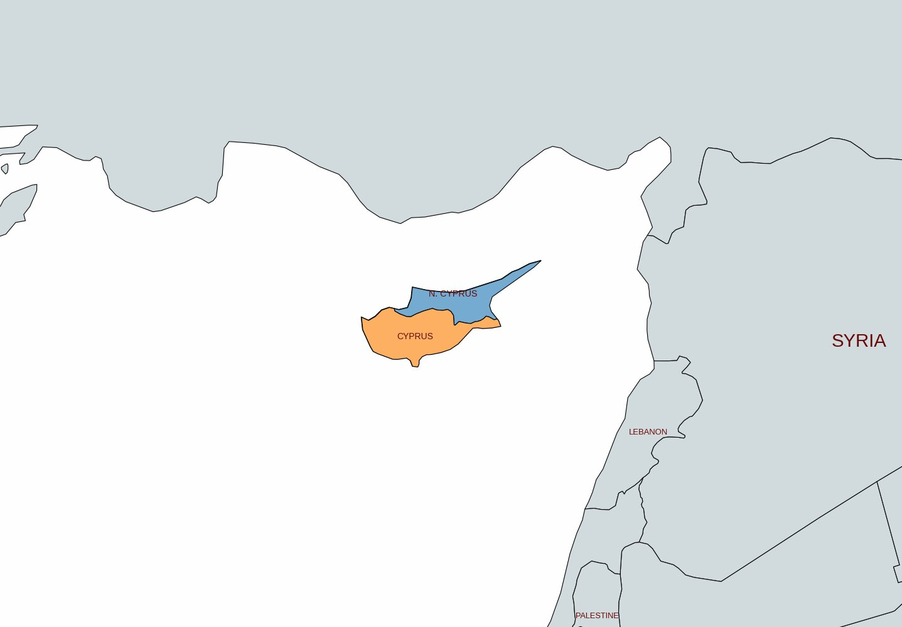
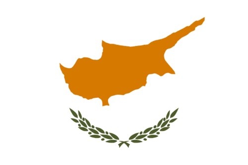
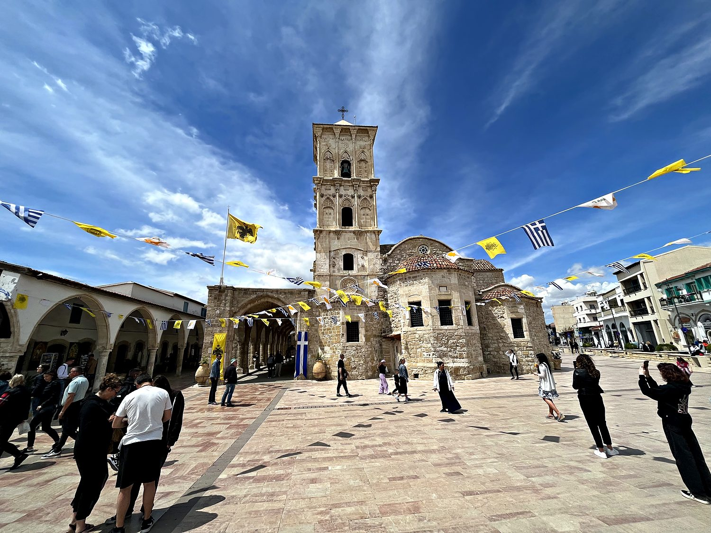
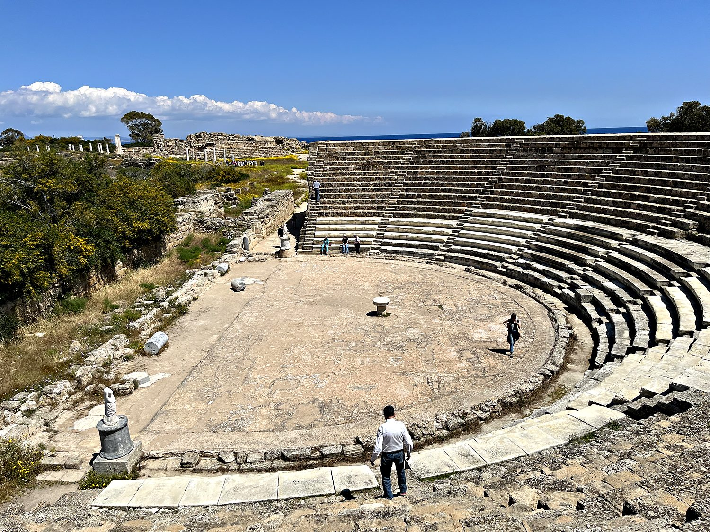
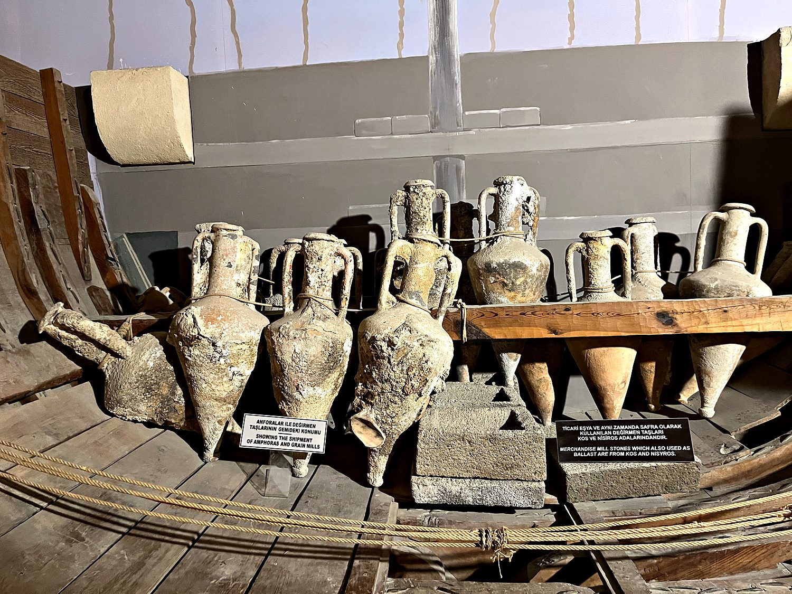

I spent a week in Cyprus in April 2023, based in Larnaca and traveling the island with my dad, in an itinerary that doubled as my first real crash course in driving a manual car. This proved to be, in the technical sense, a fiasco: it took me more than 4 stalls, with at least as many irate car honks, for me to finally grasp the sacred relationship between the clutch and the accelerator. By the end of the trip I could more or less pilot a stick shift across the island, provided you were not too attached to a smooth departure from any given traffic light. It was worth the humiliation, because Cyprus turned out to be one of the most layered places I have visited: a small Mediterranean island where Greek Orthodox churches, Roman ruins, Ottoman-era mosques, and one tense international border all coexist within a couple hours' drive.
Cyprus sits in the far eastern Mediterranean, closer to Syria and Lebanon than to Greece, and its position at the crossroads of Europe, Asia, and Africa has made it one of the most fought-over islands in history. We were based in Larnaca, a relaxed coastal city on the southern shore, built over the ancient kingdom of Kition and fronted by a palm-lined seafront where flamingos gather on a nearby salt lake in the cooler months. But the defining feature of modern Cyprus is its division. Since 1974 the island has been split in two: the internationally recognized Republic of Cyprus in the south, which is Greek-speaking and part of the European Union, and the self-declared Turkish Republic of Northern Cyprus, recognized only by Turkiye. A UN buffer zone known as the Green Line runs across the entire island and straight through the capital, Nicosia, making it the last divided capital city in the world. We experienced this status firsthand when a border guard declined to let us cross on foot because we had left our rental car on the wrong side.

Cyprus has been inhabited for over ten thousand years, and its mythology runs even deeper into Western imagination than its history. According to Greek legend, the goddess Aphrodite (of love and beauty) rose fully formed from the sea foam at Petra tou Romiou, the striking rock formation pictured above on the island's southwestern coast. Cyprus was a major center of her worship in antiquity, and the myth cemented the island's identity as her sacred home. Over the centuries the island passed through a dizzying succession of rulers: Assyrians, Egyptians, Persians, the empire of Alexander the Great, Romans, Byzantines, Crusader kings, and Venetian merchants. Each left a mark on its towns and temples.

In 1571 Cyprus fell to the Ottoman Empire, which ruled it for three centuries and settled the Turkish-speaking Muslim population whose descendants live in the north today. Britain took control in 1878 and formally annexed the island during World War I. Cyprus won its independence in 1960, but the arrangement between its Greek and Turkish communities was fragile from the start. In 1974, a coup by Greek Cypriots seeking union with Greece prompted Turkey to invade and occupy the northern third of the island, displacing tens of thousands of people in both directions and creating the partition that endures to this day. Traveling between the two halves is a sobering reminder that though the island’s ruins are ancient, many of its divisions are very much alive.
In the heart of Larnaca stands the Church of Saint Lazarus, one of the most important churches in Cyprus and a cornerstone of Greek Orthodox identity on the island. The Lazarus in question is the same one raised from the dead by Jesus in the Gospels. According to tradition, he fled persecution in the Holy Land, sailed to Cyprus, and became the first bishop of Kition (ancient Larnaca), where he lived for another 30 years before dying a second and final time. The stone church, built over his tomb in the ninth century, is a beautiful example of Byzantine architecture, its bell tower rising over a plaza strung with Greek and Cypriot flags. Visiting during Easter, I got to witness the extraordinary intensity of Orthodox devotion here, complete with candlelit processions that spilled through the streets of the old town.

Crossing into the north, we visited Salamis, the sprawling ruins of what was once the most important city-kingdom of ancient Cyprus. Founded, legend says, by a hero returning from the Trojan War, Salamis flourished for well over a thousand years under Greek, Roman, and Byzantine rule before earthquakes and Arab raids finally emptied it. What remains is spectacular: a colonnaded gymnasium, Roman baths with their under-floor heating systems still visible, and a grand theater, pictured here, that once seated thousands. Wandering the site among the toppled marble columns and the occasional startlingly large lizard, you get a vivid sense of the scale of classical Cyprus. You also get an uneasy awareness that one of the island's greatest archaeological treasures sits in a territory that most of the world does not officially recognize.

Further along the northern coast lies Kyrenia (Girne in Turkish), a picturesque harbor town backed by dramatic mountains, where we drove up to the Venetian-era Kyrenia Castle by a gorgeous seaside route. The castle's real treasure, tucked into one of its halls, is the Kyrenia Ship: the wreck of a Greek merchant vessel that sank just offshore around 300 BC and was raised, timber by timber, in the 1960s. The amphorae and grain-mill stones pictured here were its cargo, and offer an astonishingly intimate window into ancient Mediterranean trade. Standing over a boat that sailed while Alexander the Great was still a recent memory, it was hard not to feel the full, vertiginous depth of this island's past.
